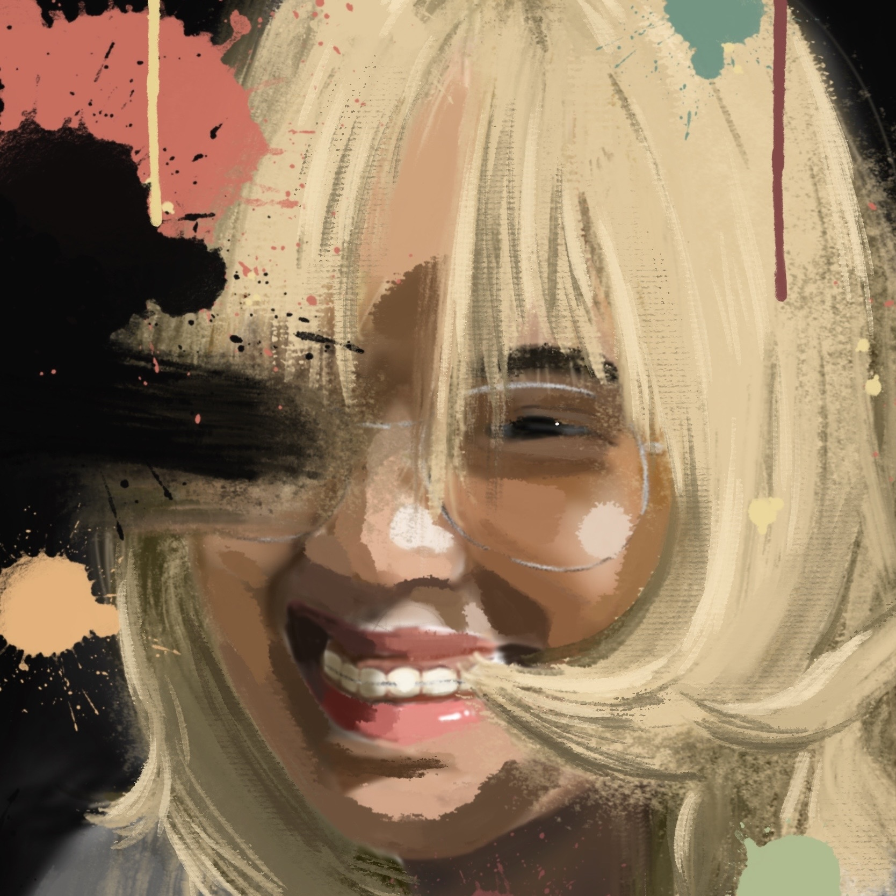
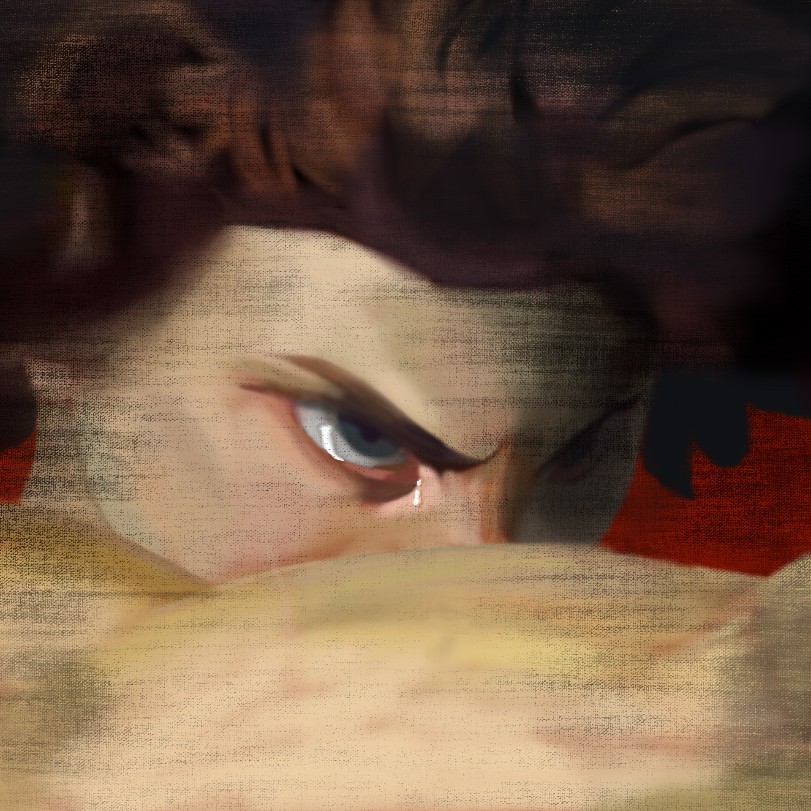
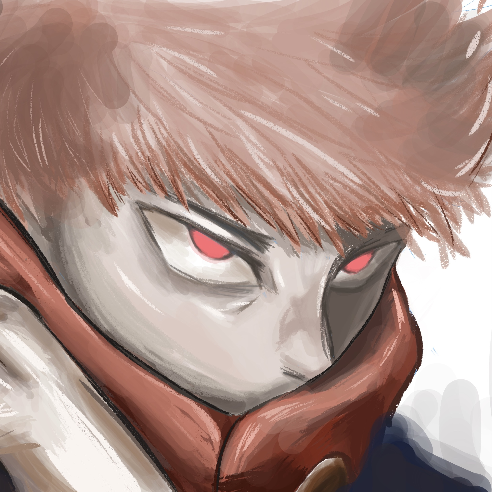
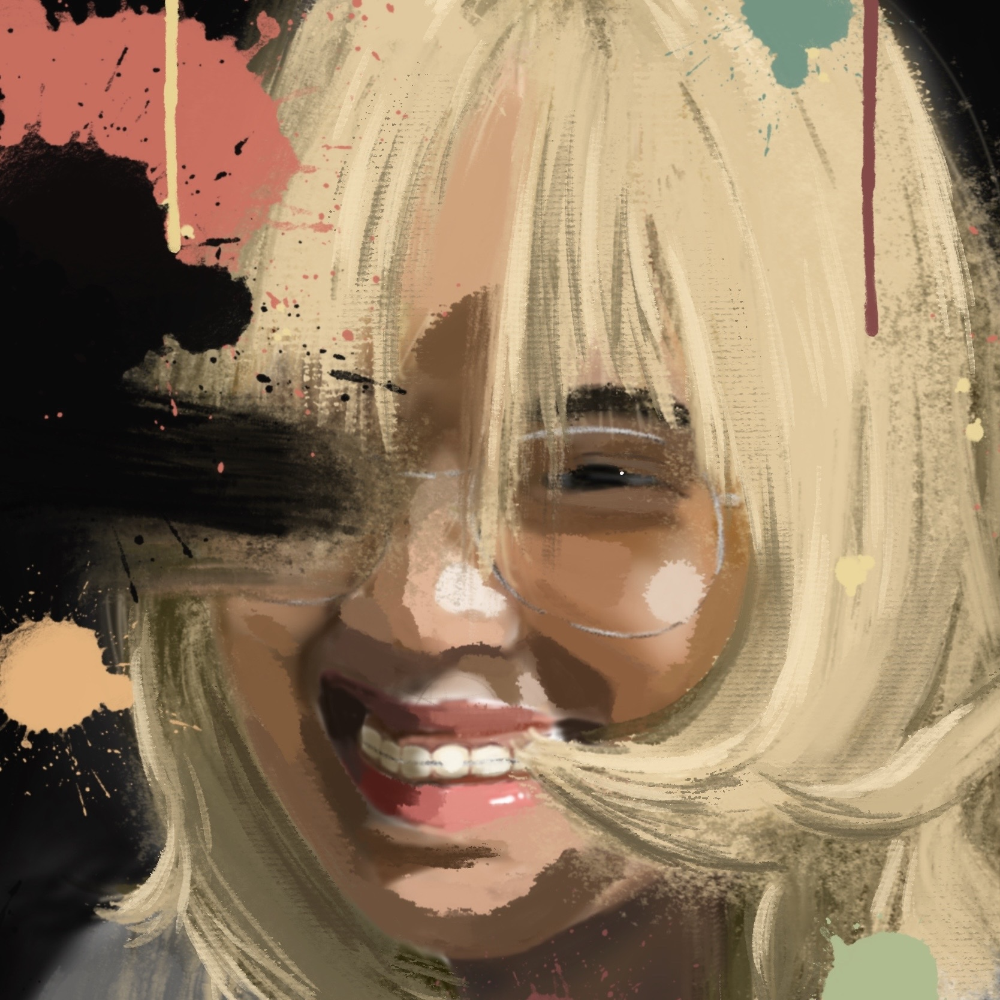
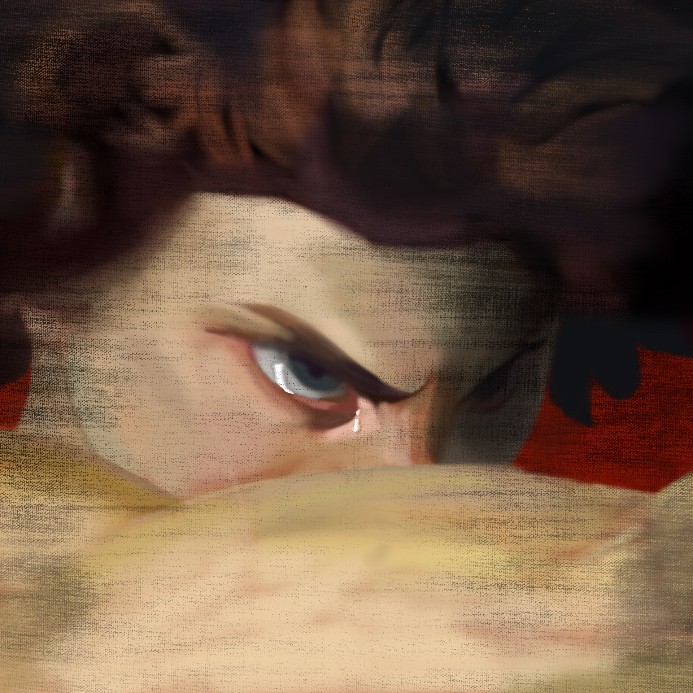
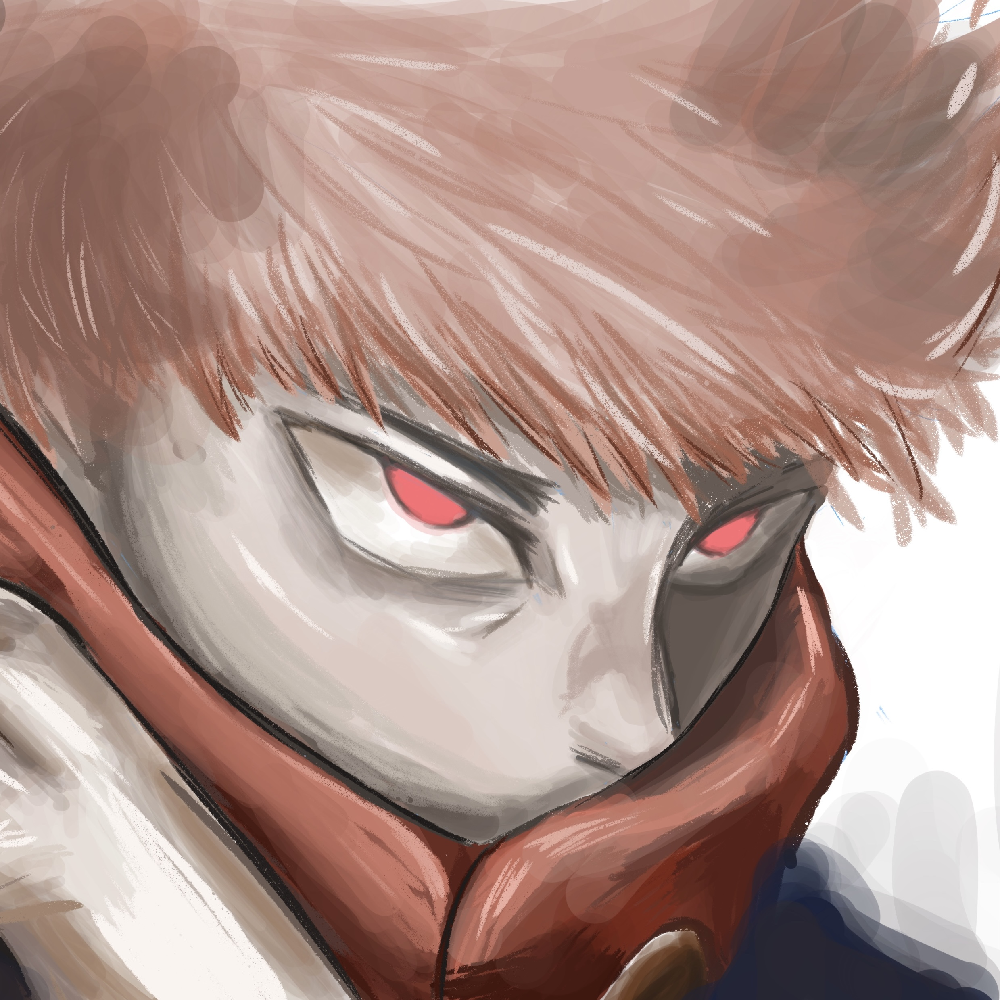

Welcome to My Creative World
Welcome to my creative world! I’m Andrei, a Multimedia Arts student at FEU Institute of Technology, specializing in drawing with a focus on anime-inspired artwork. My passion for art goes beyond just technique; it’s about bringing characters to life, crafting imaginative worlds, and capturing the essence of anime that has inspired me since day one. My work reflects a blend of traditional and modern influences, drawing on the expressive style of anime while also infusing my personal perspective and experiences. Each piece is crafted with attention to detail, aiming to evoke emotion, tell a story, or spark a connection with those who view it. From intense character portraits to dynamic action scenes and atmospheric backgrounds, I strive to create art that resonates with others who share my love for anime.
Featured Artwork
 





Here on my homepage, you’ll find a collection of my latest projects, sketches, and completed artworks, showcasing my growth as both an artist and a storyteller. I’m excited to share this journey with you and hope my work can inspire, entertain, and maybe even transport you to another world. Thank you for visiting, and I look forward to sharing more as I continue to explore and evolve as an artist.